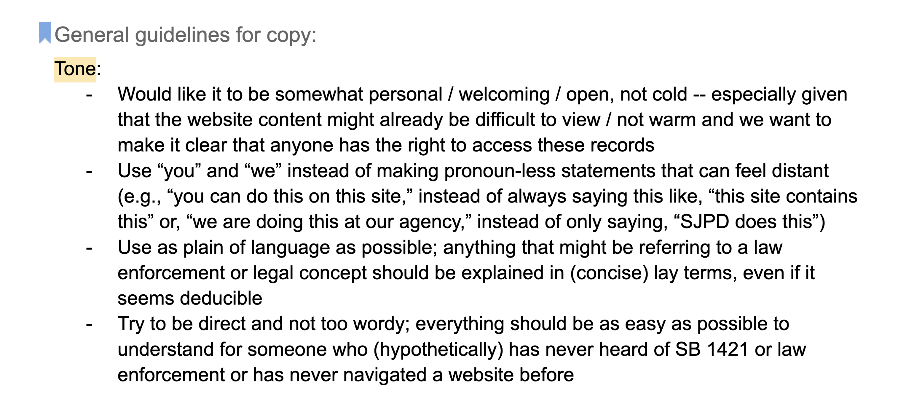
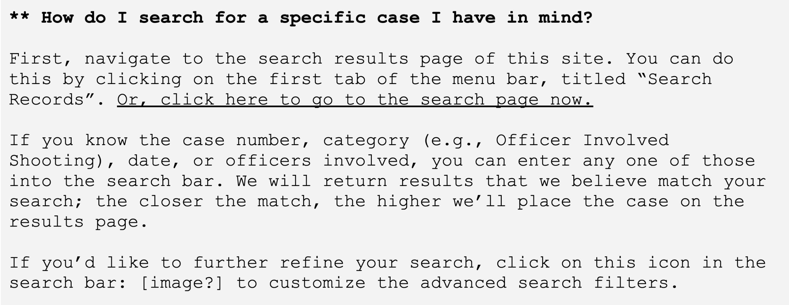
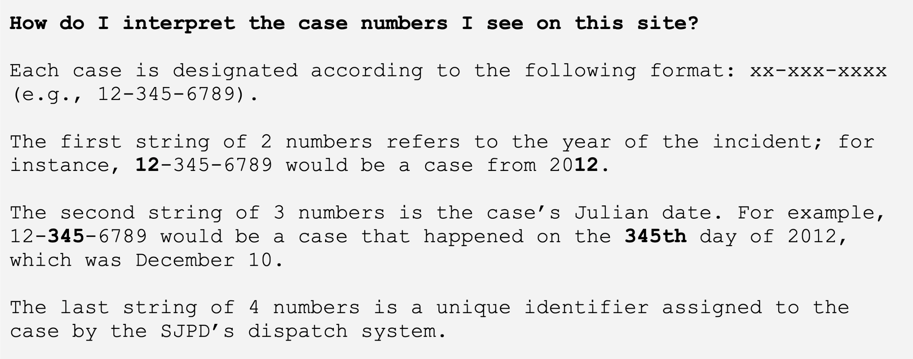
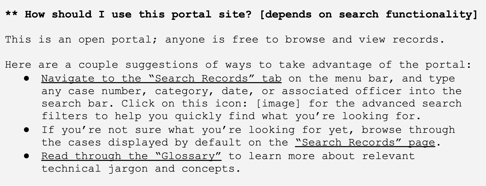
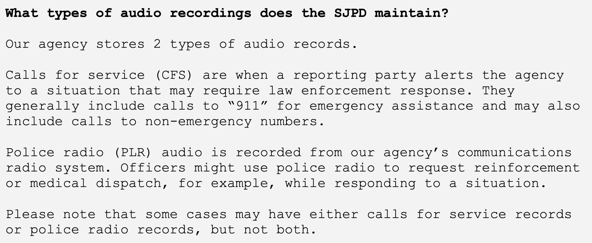

Defining a Voice @ San José Mayor's Office of Tech and Innovation
Updated May 25, 2022
Overview
In 2018, California passed Senate Bill 1421, which mandated that police departments in the state make officer misconduct records available to the public when requested. As a group of 3 engineers, 1 designer, 1 legal, and 1 project manager, my team aimed to design and build a web portal where the San José Police Department (SJPD) could publish relevant records in a timely and accessible manner.
The sole designer on team, I was responsible for everything from helping define the product features to championing accessible design to what you’ll read about below: crafting our voice and establishing a writing style.
Problem
The San José Police Department, and police departments more broadly, often employ law enforcement jargon that can be confusing and unfamiliar to a general member of the public. This web portal, though, was specifically meant to connect members of the public with resources and data from the department. It was our job to make sure SJPD’s files were readable and accessible to any person with no prior experience with law enforcement administration or policing at large. How could we design content that 1) clearly clarified technical language and, 2) made the law enforcement systems at San José less intimidating for users?
Step 1: Be Personal
As a designer, one of my biggest focuses on this project was making sure that the portal didn’t feel exclusive; I wanted it to be clear that anyone should feel comfortable taking full advantage of the resources on the site.
When I began thinking about content and writing for the records portal, my main guideline was this: Be personal, direct, and simple. Below is a screenshot from a first draft of my content-related work for the records portal, where I describe in more detail what I was aiming for in terms of tone and writing style:
These guidelines became most helpful when I drafted copy for an FAQ page to be added to the site. Below is an example of content that aimed to instruct the user as clearly as possible, without being impersonal:
Step 2: Lead by Example
When I began drafting the content for the glossary (where we could index definitions of legal and law enforcement jargon related to SJPD and SB 1421) and FAQ pages of the portal, I quickly realized that using examples was the easiest way to explain certain concepts or features of the site. This way, a complex notation system like the SJPD case numbers became simpler and readers had a ledge to grasp onto:
Similarly, examples made it easy to show a user how we intended the portal to be used:
When I needed to explain what kind of records types the police department kept, I referred to real life examples that any member of the public was likely to be familiar with:
Conclusion
Working on copywriting and content was truly the highlight of my 10 weeks at San José. I have always loved writing, but had never thought to pay so much attention to copywriting as a designer. I left my fellowship with the MOTI office eager to be more involved with content design and writing work for other design projects I was working on. My favorite thing about it all was how it felt like I had a direct communications pipeline to users.
I’m still working on improving my writing—with regards to both content design and my personal writing. If you’d like to see more of my copywriting work, I encourage you to take a look at iiDecide. If you’re interested in reading creative writing, you might enjoy Stories of Kitchens.
Back to homepage